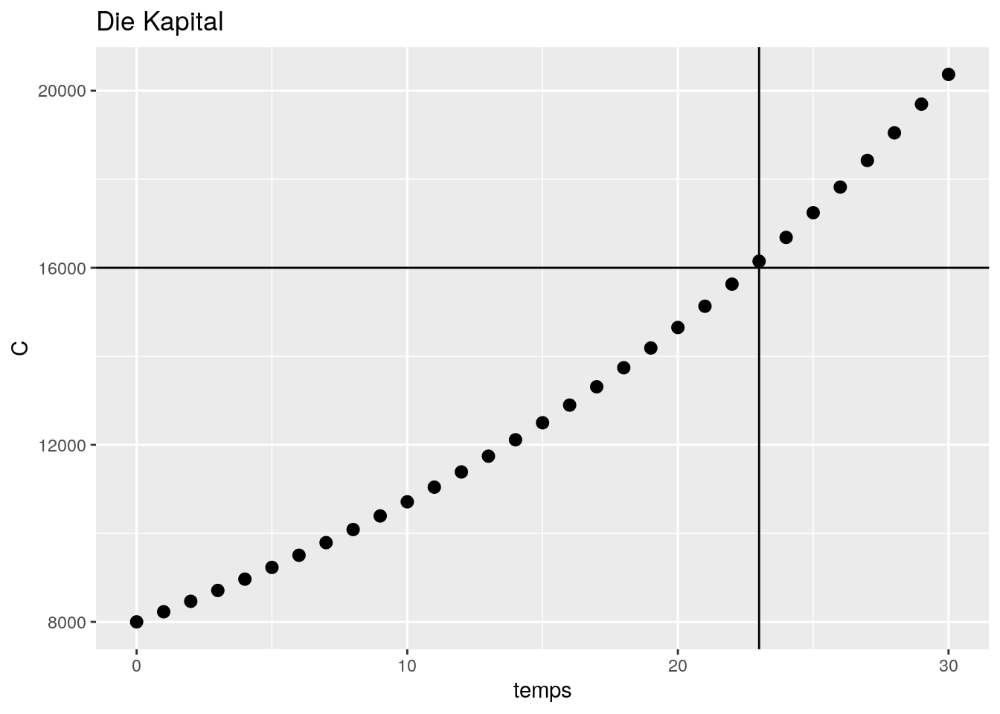

“Weißt du, das ist der Lauf der Welt. Manchmal bist du reich und manchnmal bist du arm, und wenn du oben bist, ist es nie sogut wie es scheint… und wenn du unten bist glaubst du du kommst nie wieder nach oben. Aber das Leben geht weiter. Vergiss das nie! Geld ist nur Papier Darauf kommts nicht an, auch wenn es oft so scheint”.
Hier ist es meine erste Artikel, die ich gemacht habe, um meine Schwester zu helfen. Es geht um ein Reihenfolge im Finanzbereich, nämlich die Interessezahl.
(Zeigen Sie, dass das Kapital auf ein Konto ein Beziehungwiederholung ist)
Am Anfang der Periode, sei \(n=0\), unser Perrine hat ein Kapital von \(8000\) euros, man schreibt \(C_0=8000\).
Sie weißt nicht wie sein Geld aus gibt, sie legt sein Geld in einem Konto mit Interesse an, es ist nicht genau wie das aber man vereinfacht.
In diese Übung beträgt die Interesse \(r=0.038\).
Man bezahlt auch ein fest kosten, \(F=76\) euros.
Am Ende des Jahres, sie holt die Interesse auf die Kapital, minus die Festkost, man schreibt :
\(C_1=C_0+r*C_0-(1*F)\)
\(C_1=(1+r)*C_0-F\)
Angenommen, dieses Kapital \(C_1\) wieder angelegt wird, mit der gleich Bedingung der letzte Mal, man sieht: \(C_2=(1+r)*C_1-F\)
Vorausgesetzt, dass für alle \(n \in N\), erhält man die Rekursionsrelation : \(C_n=(1+r)*C_{n-1}-F\)
(Zeigen Sie, dass \(D_n\) eine geometrische Reihenfolge ist.)
Man schreibt :
\(D_n=C_n-2000\)
\(D_n=(1+r)C_{n-1}-F-2000\)
\(D_n=(1+r)C_{n-1}-(F+2000)\)
Von dort, kann man merken, dass für \(r=0.038\) und \(F=76\) , wir haben \((1+r)2000=2000+F\) also :
\(D_n=(1+r)C_{n-1}-(1+r)2000\)
\(D_n=(1+r)(C_{n-1}-2000)\)
\(D_n=(1+r)D_{n-1}\)
Wenn man schreibt \(q=(1+r)\), wir haben doch die Definition von eine geometrische Reihenfolge , also \(D_n\) ist eine geometrishe Reihenfolge mit Faktor \(q=(1+r)\) und erste Term \(D_0=C_0-2000=8000-2000=6000\).
(Wie viel Geld bekommt Perinne nach zehn Jahren ?)
Man kann immer eine geometrsiche Reihenfolgen in Form von \(D_n=q^nD_0\) geschrieben, tatsächlich :
Wenn K est un kommutativer Körper – zum Beispiel ℝ (realer Körper) oder ℂ (komplex Körper) – und wenn \({\displaystyle (u_{n})_{n\in \mathbb {N} }}\) ein geometrsiche Reihenfolge von K mit Faktor q ∈ K ist, also wir haben für allen natürlichen Ganzzahlen \(n\) :
\({\displaystyle u_{n}=u_{0}q^{n}}\)
Man schreibt die Gleichheit \(C_n-2000=(1+r)^nD_0\)
\(C_n=(1+r)^nD_0+2000\)
Ersetzen Sie \(r=0.038\) ; \(n=10\) und \(D_0=6000\) :
Wir erhalten \(C_{10}=1.038^{10}*6000+2000=10712.14\), die Kapital bekommt nach \(n=10\) Jahre.
(Wie viel Jahren braucht man um das Kapitatl zu verdoppeln ?)
Man sucht \(n^*\) sowie \(C_{n*}=2C_0\) also :
\(2C_0=(1+r)^{n^\star}*D_0+2000\)
\(2C_0-2000=(1+r)^{n^\star}*D_0\)
\(\frac{2C_0-2000}{D_0}=(1+r)^{n^\star}\)
\(log(\frac{2C_0-2000}{D_0})=n^{\star}*log(1+r)\)
\(log(2C_0-2000)-log(D_0)=n^{\star}*log(1+r)\)
\(n^{\star}=\frac{log(2C_0-2000)-log(D_0)}{log(1+r)}\)
Man ersetzt \(r=0.038\) , \(D_0=6000\) und \(C_0=8000\) :
Man gibt \(n^{\star}=22.71833\) aber \(n \in N\), man soll die \(23.\) Jahre warte, um die Kapital doppelt zu sehen \(n^{\star}=23\).
Man kann mit Kalkül prüfen.
\(C_{23}=(1.038)^{23}*6000 +2000=16147.85\)
\(C_{22}=(1.038)^{22}*6000 +2000=15629.91\)
NB : Ich weiss nocht nicht, wie ich die “Warnung” auslöschen kann.
Ich habe die folge Parametre geschreiben, aber passt nicht
print("```{r message=FALSE}")## [1] "```{r message=FALSE}"#Wenn jemand die Lôsung hat
message=FALSE
print("```")## [1] "```"library(ggplot2)
temps <- seq(1,31)
r <- 0.038
C_0 <- 8000
D_0 <- 6000
C <- rep(0,30)
C[1] <- C_0
D <- rep(0,30)
D[1] <- 6000
for (i in 1:30){
C[i+1]<-(1+r)^i*D_0+2000
}
for (i in 1:30){
D[i+1]<-C[i+1]-2000
}
temps <- temps-1
data_C <- data.frame(C,temps)
ggplot(data_C, aes(x = temps, y = C))+
geom_point(size=2.5,label="C") +
ggtitle("Die Kapital") +
facet_grid(labeller = label_value) +
geom_hline(yintercept = 16000)+
geom_vline(xintercept = 23)## Warning: Ignoring unknown parameters: label